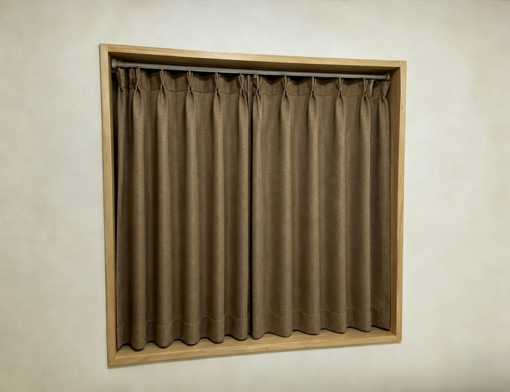
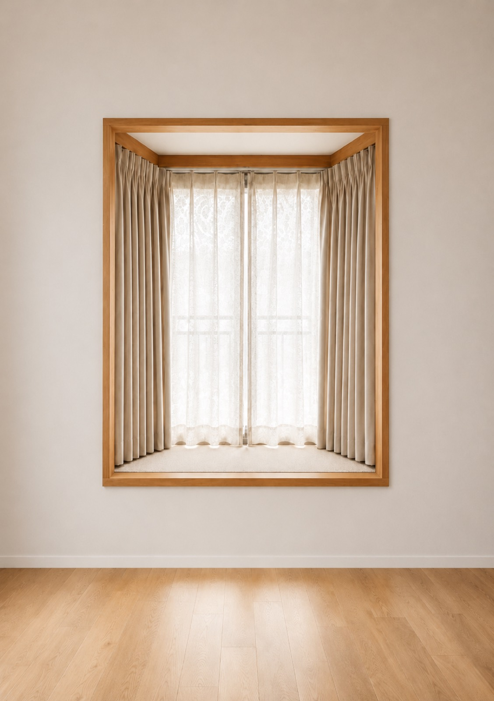
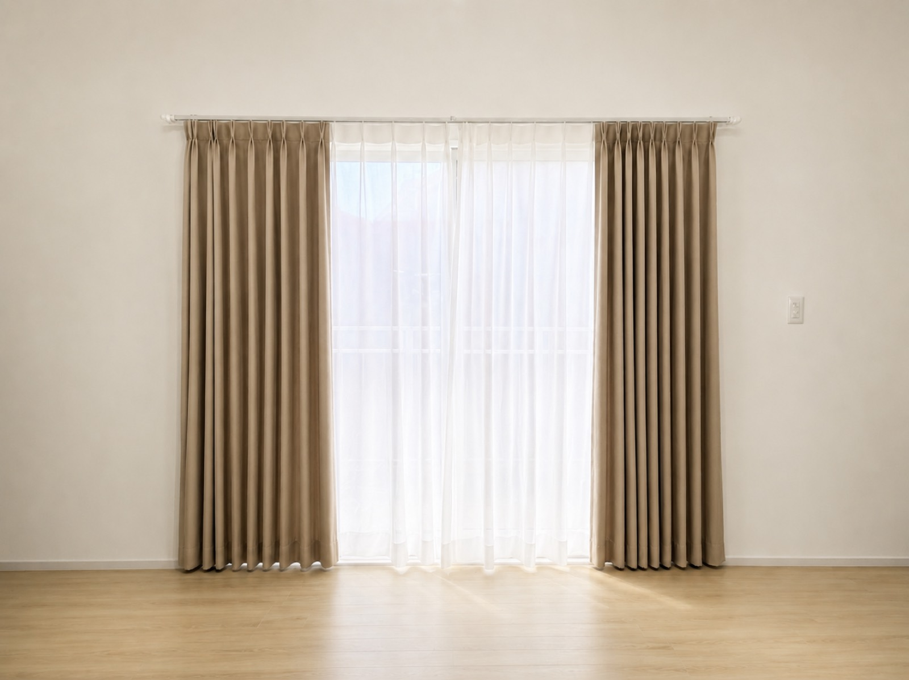

中国工場・供給実景
人工木デッキ材工場


人工木デッキ材、工場在庫、出荷前状態の記録。

見積
価格はサイズ、数量、仕様、配送先で変動します。図面、写真、寸法をLINEで送ってください。
W 50-140cm / H 50-140cm
参考 ¥15,800～
02 ワイド窓セットW 141-200cm / H 141-200cm
参考 ¥18,800～
03 掃き出し窓セットW 201-300cm / H 201-260cm
参考 ¥24,800～| 丈 \ 幅(cm) | 50-140 | 141-200 | 201-260 | 261-300 |
|---|---|---|---|---|
| 50-140 | ¥11,800 | ¥15,800 | ¥26,800 | ¥35,800 |
| 141-200 | ¥16,800 | ¥24,800 | ¥38,800 | ¥52,800 |
| 201-260 | ¥19,800 | ¥29,800 | ¥46,800 | ¥62,800 |
税込参考価格。生地、窓数、取付条件、配送先により変動します。カーテンレールは含みません。
仕様説明
寝室や西日の強い窓向けに遮光性を確認。
熱セットでウェーブを整え、洗濯後の形崩れを抑えます。
掃き出し窓は床から -1cm、腰窓は窓枠から +15cm を目安に確認。
現場適性
注意
見積前
失敗例
サプライチェーン
京建は中国工場確認、材料調達、仕様整理、包装確認、国際物流確認、日本到着後の確認、供給記録を支援します。現場施工、施工保証、エンドユーザー対応は施工会社様側で確認します。
FAQ
はい、窓全体とレール近景があれば相談できます。
必要な場合は見積前に確認します。
カーテン套餐価格には通常含めません。
幅、高さ、レール状態の確認が必要です。
窓全体写真、レール写真、幅、高さ、数量を送ってください。
サプライチェーン
京建は施工顧客を取りません。材料調達、包装、輸送、到着確認を支え、現場施工・見積・顧客維持は工務店様側の仕事です。
材料と生産可否を確認。
箱、角保護、ラベル、パレット、ロール梱包を確認。
国際輸送と日本側配送条件を確認。
到着、寸法、破損確認、引き渡しを記録。
人工木デッキ材、工場在庫、出荷前状態の記録。


広告材料制作、出荷前確認、包装状態の記録。
価格はサイズ・数量・配送先により変動します。施工、現場責任、取付費用、エンドユーザー対応は施工会社様側でご確認ください。
資料受付
現時点ではサイト内アップロードや決済フォームは作らず、LINEで資料を受け取ってから仕様確認します。
Related Guides
製品名、現場写真、寸法、数量、納品先を送ってください。仕様確認後に概算見積をご案内します。